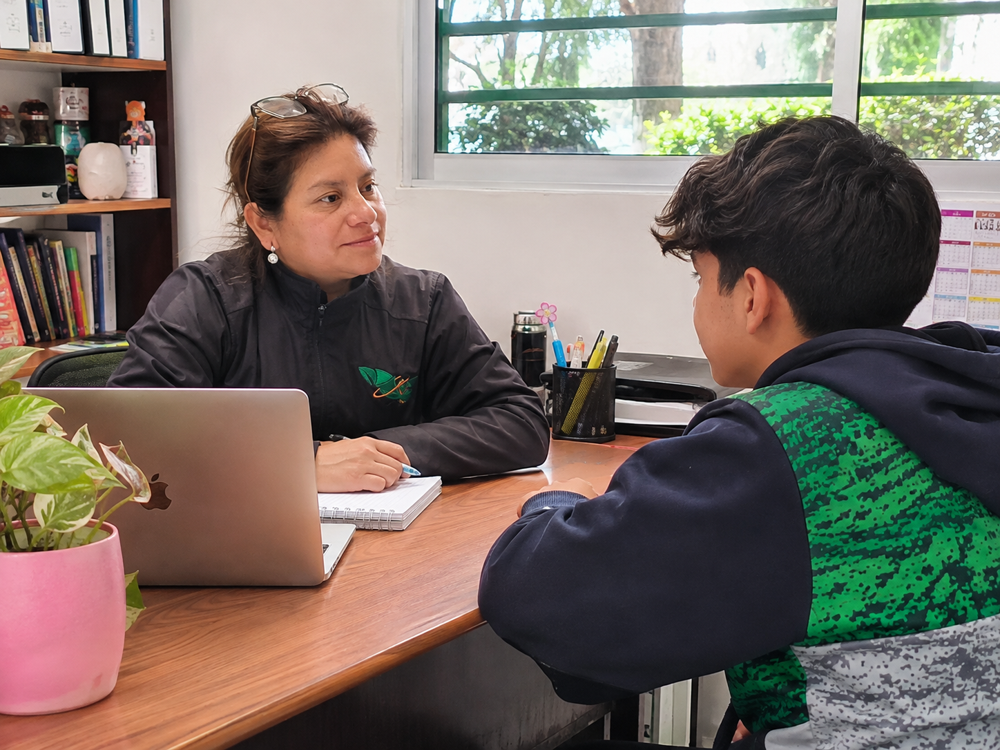

4. Recursos para construir la paz
En esta sección encontrarás información, recomendaciones y materiales que pueden ayudarte a fortalecer la Cultura de la Paz dentro y fuera de nuestra escuela.
¿Dónde podemos encontrar apoyo?
La convivencia pacífica es una responsabilidad compartida. Existen personas e instituciones que pueden ayudarnos a resolver conflictos y prevenir situaciones de violencia.

Orientación escolar
Es un espacio donde los estudiantes pueden recibir apoyo y orientación ante dificultades de convivencia.
Docentes
Los profesores pueden ayudar a identificar conflictos, escuchar inquietudes y buscar soluciones respetuosas.
Familia
La comunicación con nuestros familiares puede ayudarnos a expresar emociones y recibir acompañamiento.
Compañeros
El apoyo entre estudiantes fortalece la confianza, la empatía y el sentido de pertenencia.
Recomendaciones para una convivencia sana
Presta atención cuando alguien habla y evita interrumpir o juzgar antes de conocer su situación.
Todas las personas tienen distintas opiniones, capacidades, experiencias y formas de pensar.
No utilices insultos, amenazas ni agresiones para solucionar un desacuerdo.
Si una situación pone en riesgo tu bienestar o el de otra persona, acude a un docente, orientación escolar o un adulto de confianza.
Los compromisos son importantes para recuperar la confianza y mejorar las relaciones.

Recursos digitales y fuentes de consulta
Estos materiales de organismos internacionales ofrecen información para promover la paz, la inclusión, el respeto y la convivencia escolar.
Habilidades socioemocionales
Manuales educativos sobre empatía, comunicación, cooperación, manejo de emociones y resolución de problemas.
Consultar manualesSeguridad digital
Recomendaciones para prevenir el ciberacoso y actuar de manera responsable en internet.
Consultar recurso¿Qué hacer ante un conflicto escolar?
- Mantén la calma y evita responder con violencia.
- Identifica qué está ocurriendo y cómo te sientes.
- Escucha a las personas involucradas cuando sea seguro hacerlo.
- Expresa tu punto de vista de manera respetuosa.
- Busca soluciones que respeten los derechos de todos.
- Solicita ayuda de un adulto de confianza si el conflicto incluye amenazas, acoso o cualquier tipo de violencia.
Reflexión final
Construir una Cultura de la Paz requiere compromiso, empatía, responsabilidad y respeto.
Así como un programa informático necesita instrucciones para funcionar, nuestra convivencia necesita decisiones conscientes que promuevan el bienestar de toda la comunidad.
La paz también se programa
Cada decisión es una oportunidad para crear un ambiente más justo, respetuoso, seguro e inclusivo.